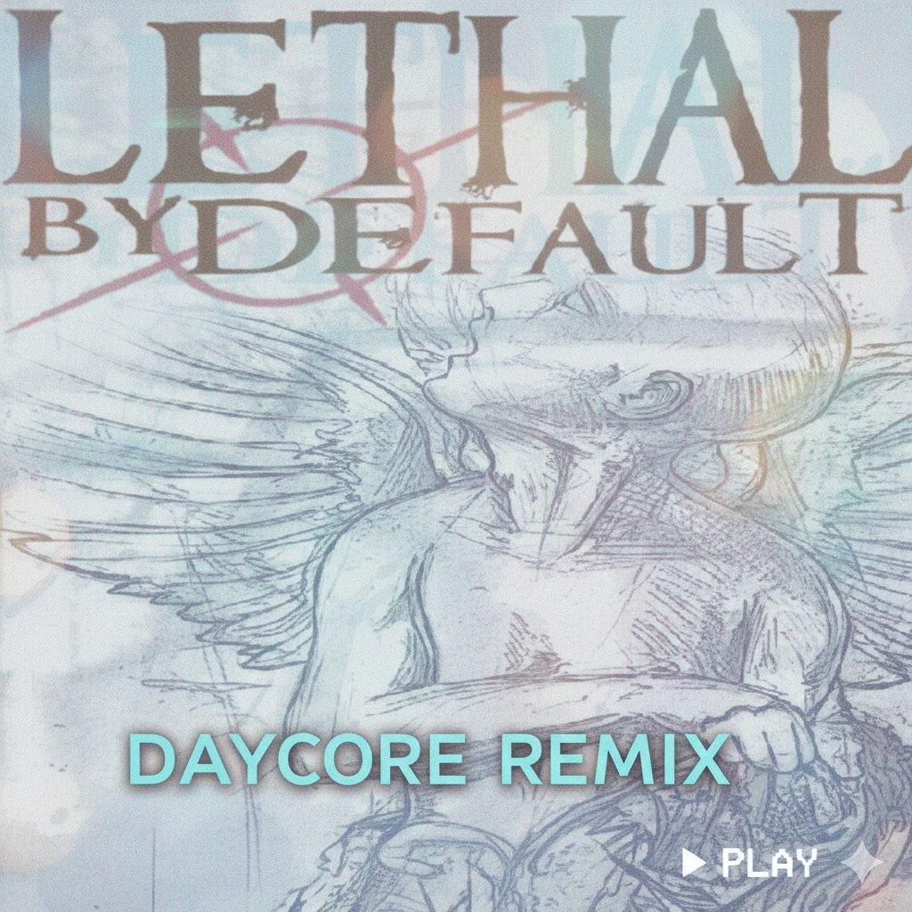

Shedding Illusions (Day~Night)

Production Notes
- Daycore Mix: Down-pitched and tempo-stretched to widen the low-mid rumble, darken vocal formants, and give the riffs a heavier, sludge-infused weight.
- Nightcore Mix: Up-pitched and accelerated to tighten drum transients, lift the upper harmonics, and push the arrangement into a frantic, high-energy pace.
Shedding Illusions (Daycore Remix)
Select a track to play

Shedding Illusions (Nightcore Remix)
Select a track to play